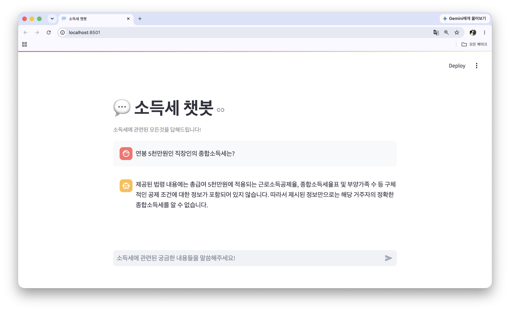
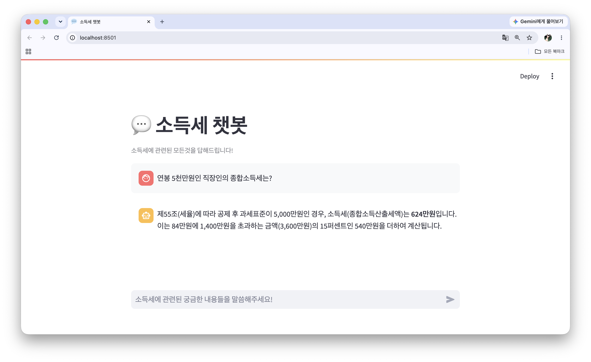

학습 목표: LangChain을 활용해 기본적인 RAG Pipeline을 구현하고, Vector Database 변경 및 데이터 전처리 등을 적용할 수 있다
연봉 5천만원인 거주자의 종합소득세를 물었을 때, 공제액·세율표가 없다고 답했다.
종합소득세는 표를 보고 계산해야 하는데, 원본 docx의 표가 청크에 제대로 들어오지 않았다.
기존 docx의 표 데이터를 마크다운으로 바꾼 tax_with_markdown.docx로 파이프라인을 다시 돌렸다.

